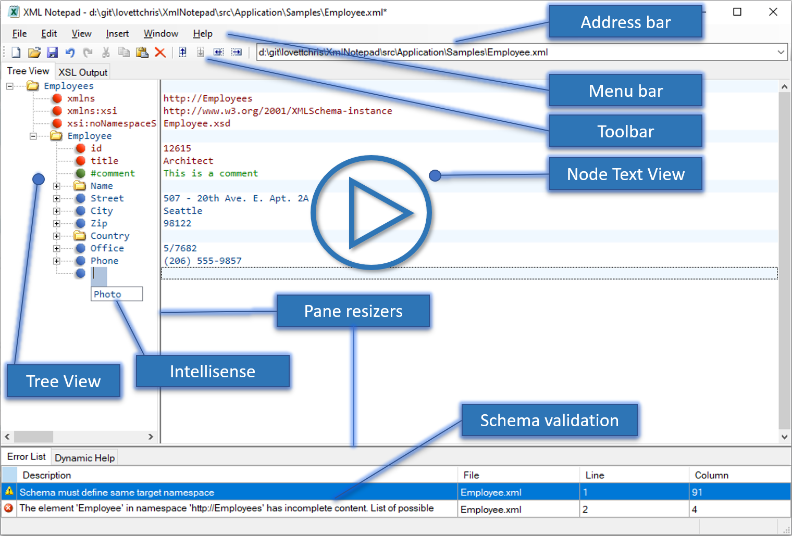

User Interface#
The interface consists of the following components:

See also Keyboard Interface.
Menubar#
See Menus for a description of each menu.
Toolbar#
The toolbar provides shortcuts for commonly used menu commands. Hover over the toolbar buttons to see a popup showing the menu command they invoke.
Address#
Displays the current file being edited. This is also a convenient place to enter an HTTP address for editing an online XML file.
XSL Output Tab#
The XSLT Output tab contains a web browser-rendered view of the HTML output from an associated XSLT
transformation. XSLT transforms are defined when your XML documents contain an xml-stylesheet processing instruction.
Node Values#
The view on the right shows the text value of the adjacent node in the tree view. For element nodes that have children it shows a light blue band because the text is in the child nodes.
Node Names#
The TreeView on the left shows the XML document hierarchy in a tree, displaying element, attribute, and processing instructions names as well as standard names for comment, text, CDATA, whitespace, and significant-whitespace nodes.
Intellisense#
When you have an associated XSD schema, intellisense popups will prompt with expected node names and enumerated node values.
XSD Annotations#
When you have an associated XSD schema, the xsd:documentation associated with the current node is displayed in a
tooltip popup and in the Dynamic help tab.
Validation Errors#
The Error List at the bottom shows validation errors and warnings.
Status Bar#
The status bar at the bottom shows various messages indicating the state of the program.
Resizers#
You can move the resizers to change the ratio of space allocated to each of the main three panels.
See also XML Notepad File Association.